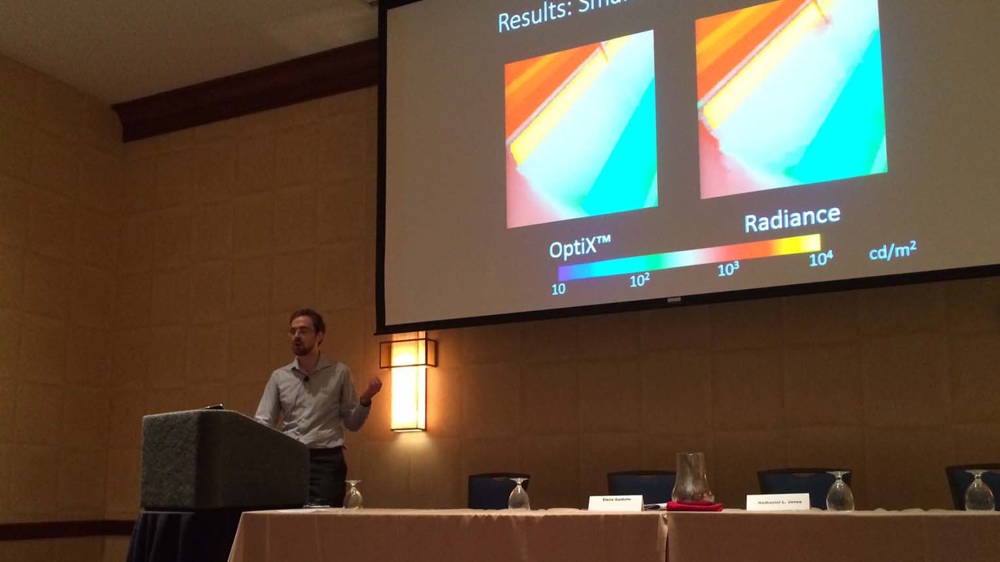

Follow these links to articles by others that have mentioned my work.

Best of ‘Ask a Modeler’: Evolving careers and talking about uncertainty
2019
IBPSA News • Volume 29, Number 2 • October 2019

Projects and work at MIT: an interview with Christoph Reinhart
2017
IBPSA News • Volume 27, Number 1 • April 2017


Class envisions MIT reaching “net zero” emissions growth
2014
Energy Futures • Autumn 2014 • December 15, 2014

Accelerad: daylighting simulation on the GPU
2014
IBPSA News • Volume 24, Number 2 • October 2014

Better together
2011
Cornell Engineering Magazine • Fall 2011
Reproduced in part in the Atkinson Center Blog • November 10, 2011

Computer graphics to help streamline green building design
2010
Cornell Chronicle • September 29, 2010
Reproduced in Communications of the ACM • October 1, 2010

‘Laptop Seat’ gives new meaning to ‘pull up a chair’
2005
The Baltimore Sun • May 22, 2005
View at MICA
©2019 Nathaniel Jones
Last updated 10/30/19
Last updated 10/30/19